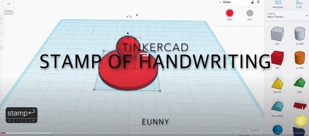

Extend Yourself - Tinkercad: Create a Stamp
 Convert from a Drawing
Convert from a Drawing
Did you know you can make your own drawing and turn it into a 3D object? Try it - create your own drawing and turn it into a 3D stamp.
Draw your picture on paper or in a drawing program.
- If you use a drawing program, save it as an .png. Then follow the launcher steps to convert it to an .svg file so you can import it into Tinkercad.
- If you drew it on paper, take a picture with a digital camera or smartphone, and upload it to where you save your digital files. Then follow the launcher steps to convert it to an .svg file so you can import it into Tinkercad.
Add Words
Did you know that you can also add words on your stamps?

Try it - create your own 3D Handwriting Stamp. Watch this video to find out more about how to do this.